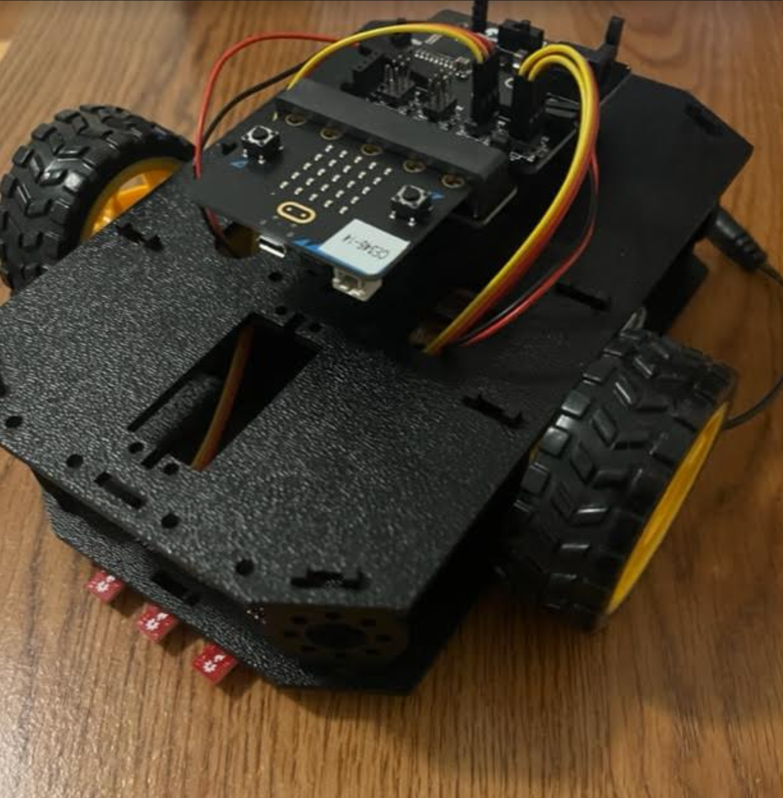

Guided Robot
Modern vehicles are becoming more and more guided by sensors that take input from the world around them. One common example of a vehicle responding to changes in its environment is a car which moves based on sensed colors. This robot seeks to emulate that behavior by reading the color of the ground in front of it and then moving accordingly. Specifically, it drives along a black line. It does this by continuing straight if it's still on the line, turning left if it's right sensor is off the line, and turning right if it's left sensor is off the line.